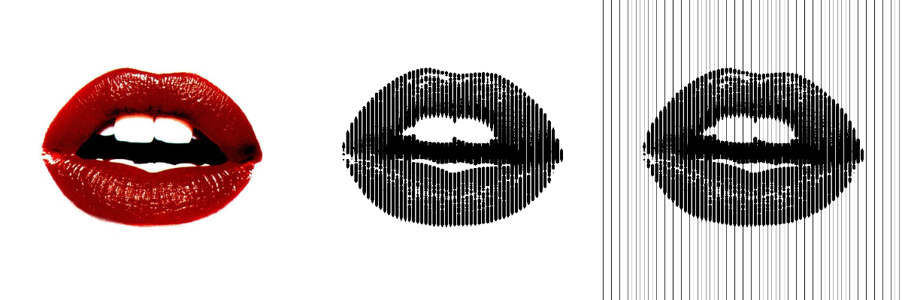

For the best results, it is recommended to remove the background from your images before uploading. This ensures cleaner, more defined line art. You can use free tools like Remove.bg or other online background removers.
Controls the distance between each line in the generated art. Smaller values create tightly packed lines for finer details, while larger values give a more spaced-out look.
Adjusts the background fill color. Black offers a bold look, while white creates a softer effect.
Sets the direction of the lines. Vertical lines give a more structured, classic appearance, while horizontal lines offer a softer look.
Hides lines below a certain thickness to reduce visual clutter. Enabling this will activate the "Minimum Bar Thickness" slider.
When "Hide Thin Lines" is selected, this slider sets the minimum thickness threshold, allowing for a cleaner, more organized look.
Adjusts the starting point of the lines, creating varied visual patterns by shifting the initial position of the lines.